事务概述：
事务是由单独单元的一个或多个SQL语句组成，在这个单元中，每个MySQL语句是相互依赖的。而整个单独单元作为一个不可分割的整体，如果单元中某条SQL语句一旦执行失败或产生错误，那么整个单元将会回滚。所有受影响的数据将返回到事务开始以前的状态；如果单元中的所有SQL语句均执行成功，则事务被顺利执行。
MySQL中的存储引擎
提到了事务，我们就先说说MySQL中的存储引擎。在MySQL中的数据用各种不同的技术存储在文件（或内存）中。
查询MySQL中支持的存储引擎,通过如下命令：
1
show engines;
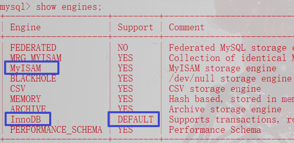
在MySQL中用的最多的存储引擎有：InnoDB、Myisam、Memory等。其中 InnoDB 支持事务，而 Myisam、Memory等不支持事务。
事务的特点：
- 事务的ACID(acid)属性
- 原子性（Atomicity）
原子性是指事务是一个不可分割的工作单位，事务中的操作要么都发生，要么都不发生。 - 一致性（Consistency）
事务必须使数据库从一个一致性状态变换到另外一个一致性状态。 - 隔离性（Isolation）
事务的隔离性是指一个事务的执行不能被其他事务干扰，即一个事务内部的操作及使用的数据对并发的其他事务时隔离的，并发执行的各个事务之间不能互相干扰。 - 持久性（Durability）
持久性是指一个事务一旦被提交，它对数据库中的数据的改变就是永久性的，接下来的其他操作和数据库故障不应该对其有任何影响。
- 原子性（Atomicity）
MySQL事务的分类
- 隐式事务：事务没有明显的开启和结束的标记。比如：insert、update、delete 语句。
- 显式事务：事务具有明显的开启和结束的标记。前提：必须先设置自动提交功能为禁用。
事务的创建
步骤1：开启事务
1
2set autocommit = 0; -- 关闭MySQL的自动提交为手动提交。
start transaction;注意： 其中
set autocommit我们可以先根据此命令：show variables like '%autocommit%'是否开启，如果开启了我们就关闭（设置该属性值为0），如若已经关闭我们可以不操作，我们也可以不查询，不管是否开启，直接设置为关闭也可以。步骤2：编写事务中的sql语句（select、insert、update、delete）
1
2
3语句1；
语句2；
...步骤3：结束事务
1
2commit; --提交事务
rollback; --回滚事务
数据库的隔离级别
对于同时运行的多个事务，当这些事务访问
数据库中相同的数据时，如果没有采取必要的事务隔离机制，就会导致各种并发问题：脏读、不可重复读、幻读。数据库事务的隔离性： 数据库系统必须具有隔离并发运行各个事务的能力，使它们不会互相影响，避免各种并发问题的出现。
一个事务与其他事务隔离的程度称为隔离级别。数据库规定了多种事务隔离级别，不同隔离级别对应不同的干扰程度，隔离级别越高，数据一致性就越好，但并发性就越弱。注意：这里关于MySQL的事务隔离级别小编另外单独写了一篇博客：MySQL的事务隔离级别。
案例：
1
2
3
4
5
6
7
8SET autocommit=0;
START TRANSACTION;
UPDATE USER SET money = 1000 WHERE username = "张三";
UPDATE USER SET money = 1000 WHERE username = "李四";
--commit;
ROLLBACK;结果：
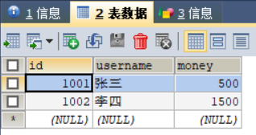
MySQL数据库隔离级别区别演示
read uncommitted (读取未提交内容) 情况演示
首先我们使用
select @@tx_siolation命令进行MySQL数据的隔离级别查看：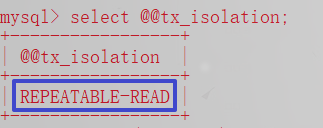
然后我们设置MySQL的隔离级别为:
read uncommitted（读取未提交内容）。1
set session transaction isolation level read committed;
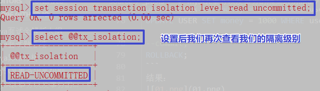
前面我们已经设置了隔离级别为
read uncommitted,下面小编就给大家演示一下在该隔离级别的情况下会出现什么情况：- 1、首先，小编的
test数据库中有一个user表，我们使用如下命令对test数据库中的user表进行操作：1
2
3use test; # 该命令提示我们要使用`test`数据库
select * from user; #我们对`user`表格数据进行查询
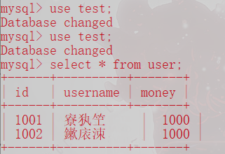
- 2、然后我们会发现查询的数据中文出现了乱码情况，解决如下：
使用如下命令：1
2
3set names gbk; # 设置编码格式
select * from user; #我们对`user`表格数据再次进行查询
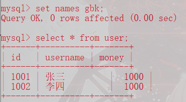
3、然后我们在新开一个窗口，同样设置隔离级别为
read uncommitted，然后再开启一个事务，为了区分两个事务，小编给两个窗口设置了不同的颜色。注意：这里，我们的第一个事务修改了数据，还未提交，这时我们在另外一个事务中对数据进行查询，结果发现查询的数据是已经修改过的数据，这就出现了脏读现象。
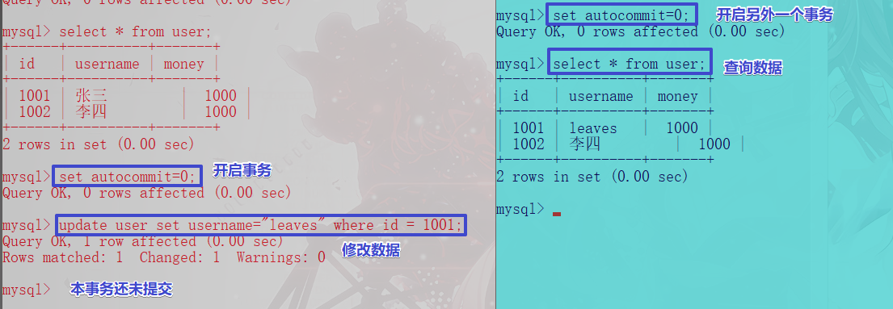4、这时我们在第一个事务进行数据回滚，然后我们在另外一个事务中再次查询数据，结果发现我们在同一个事务中查询的数据不一致，这就是我们所说的
不可重复读和幻读现象。
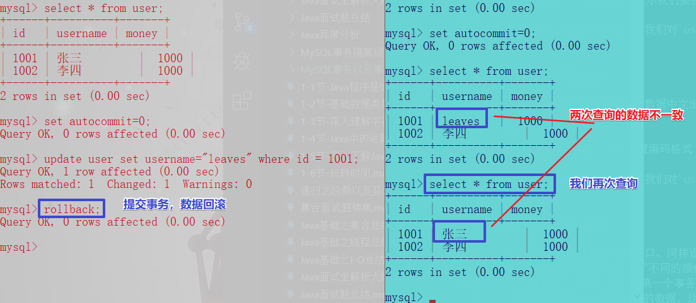
- 1、首先，小编的
read uncommitted (读取未提交内容) 总结： 该隔离级别是为最低级别，任何情况都无法保证，会出现
脏读、不可重复读和幻读现象。
read committed (读已提交) 情况演示
这里小编对于查看隔离级别，以及隔离级别的设置不作详细介绍了，小编就一笔带过了，我们主要演示该隔离级别会出现什么情况。
1、首先我们先在两个窗口设置隔离级别为
read committed,然后分别开启一个事务：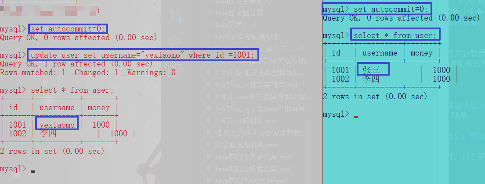
这里我们在第一个事务中修改了数据，单并没有提交，我们在另外一个事务中进行数据的查询，确实还未修改之前的数据，这里该隔离级别避免了
脏读的情况。2、下面，我们对事务进行事务提交，我们在另外一个事务中再次查询数据，看看会发生什么？
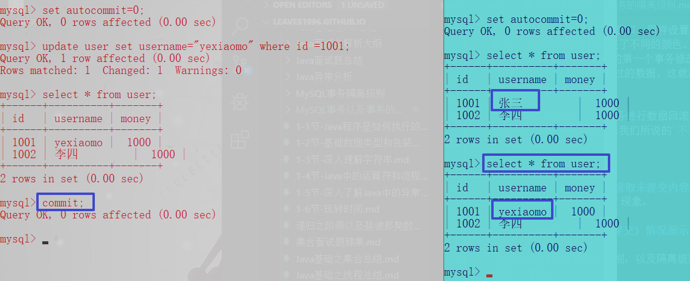
根据上面的图示，我们发现我们再次查询数据时，在同一事务中出现了两次查询数据不同的现象，这就是我们所说的
不可重复读和幻读的现象。read committed (读取已提交) 总结： 该隔离级别可避免脏读的发生，但是会出现
不可重复读和幻读现象。
repeatable read（可重复读）情况演示
1、同样，我们先在两个窗口设置隔离级别为
repeatable read,然后分别开启事务：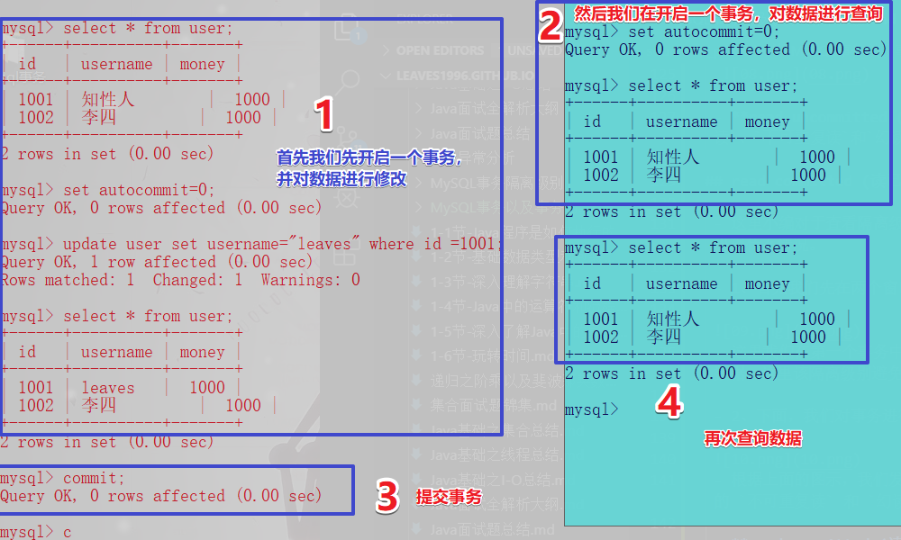
根据上图，我们发现，该隔离级别避免了
脏读和不可重复读的现象，至于幻读现象，请看下面的演示：2、同样，我们一个窗口开启一个事务，然后另外一个窗口开启一个事务，并且添加一条数据并提交事务，然后我们在另外一个事务中修改所有的数据，我们会发现受影响数据多出一条，我们本来只有两条数据，怎么就突然多出来一条数据呢？很疑惑，这就是我们所说的
幻读现象。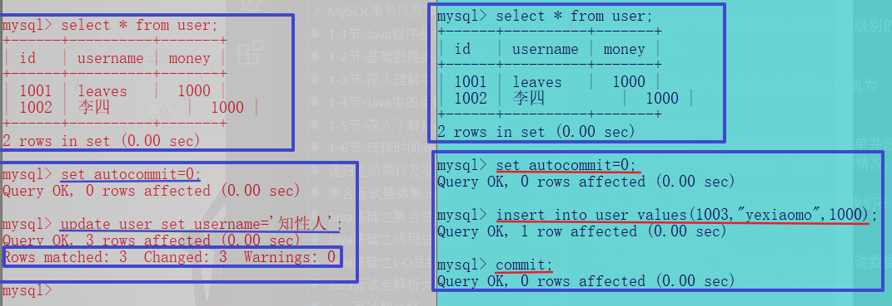
根据上面的介绍，我们了解了该隔离级别是不能避免
幻读现象。
Serializable (串行化) 情况演示
针对该隔离情况我们这里就只演示是否避免
幻读的情况：
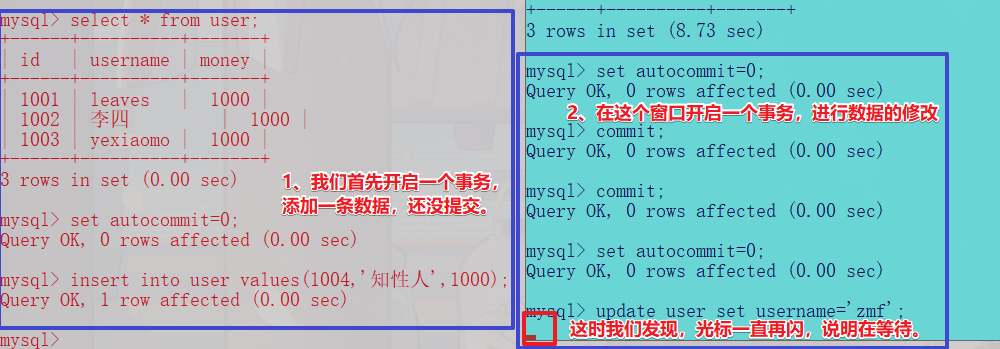根据上面的图示，我们知道两个事务同时操作同一个数据源时，会出现阻塞状态，如果长时间未反应，会出现响应超时，操作失败！！！
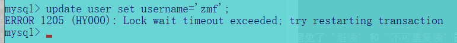如果我们在另外一个事务提交后，再次操作的话，就不会出现阻塞状态。
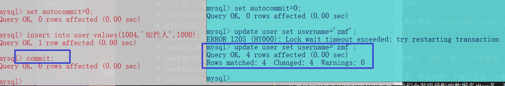
注意：
上面小编设置事务隔离级别是使用的
session的方式，也就是有效于当前会话，关闭该会话，该MySQL的隔离级别还是默认的。我们还可以使用
global的方式，设置该MySQL数据的隔离级别为永久性。1
2
3
4
5-- 设置一次性会话事务隔离级别
set session transaction isolation level read uncommitted;
-- 设置永久性事务隔离级别
set global transaction isolation level read uncommitted;
本文小编对于MySQL事务以及事务的隔离级别的介绍完毕，希望能给各位带来帮助。